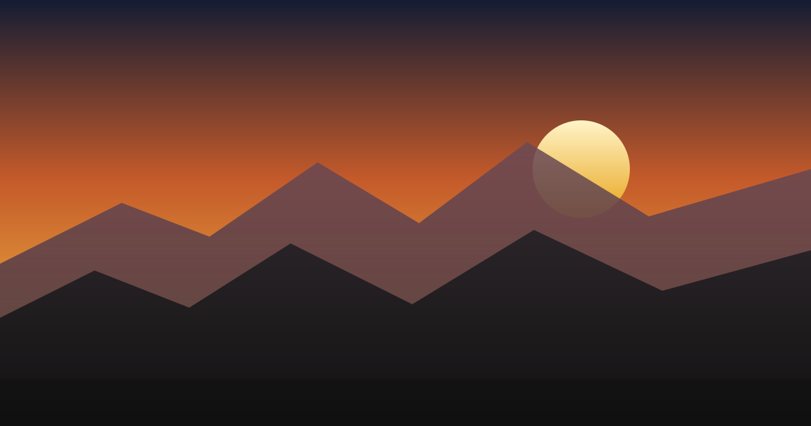

Field notes
Ridge Light on the High Road

Preview the Open Graph image, download it, or pull every picture from the page into a ZIP.

Preview the Open Graph image, download it, or pull every picture from the page into a ZIP.